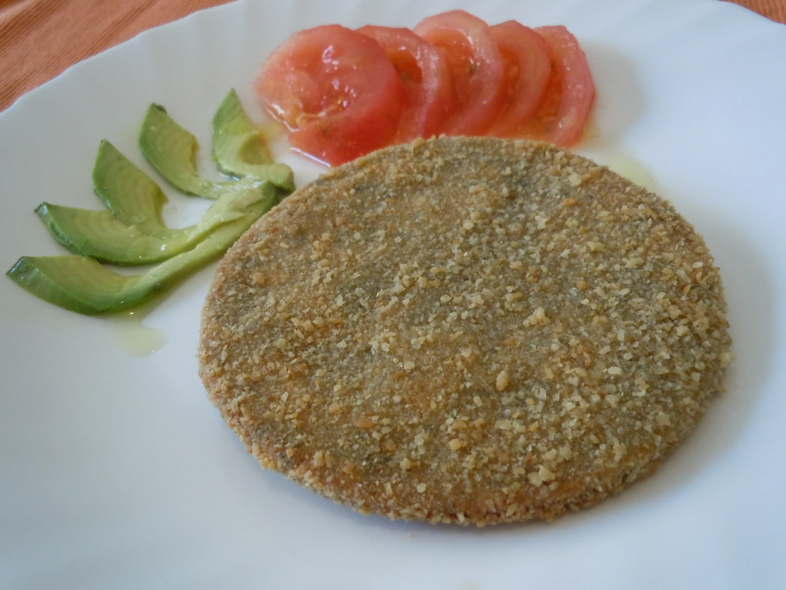
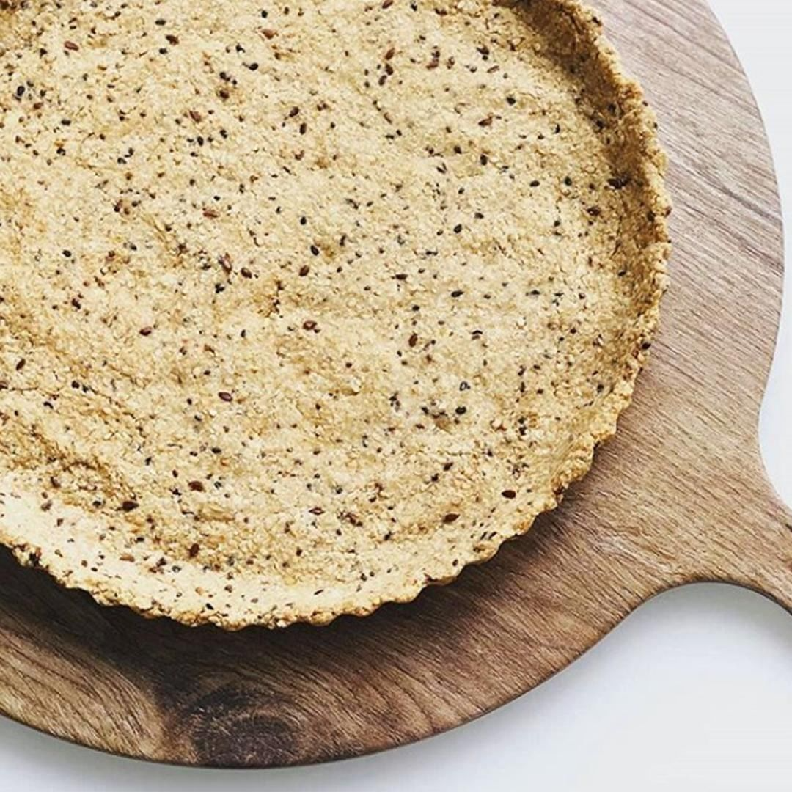
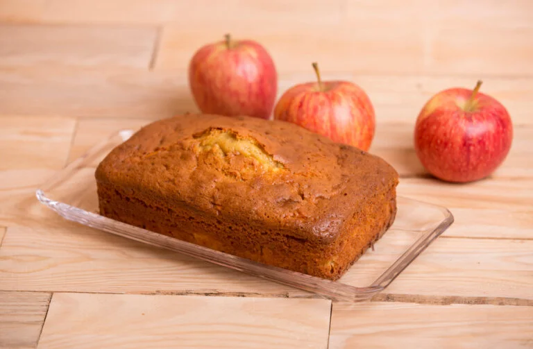

Recetas Saladas
HAMBURGUESAS Y MILANESAS DE SOJA
- 2 TAZAS DE POROTOS DE SOJA
- 2 CEBOLLAS Y AJO
- JUGO DE MEDIO LIMON
- 1 TAZA DE AVENA O SALVADO DE AVENA O PAN RALLADO
- CONDIMENTOS: PIMENTÓN, SAL
- JUGÓ DE LIMÓN
MASA DE TARTA DE HARINA INTEGRAL
- 2 TAZAS DE HARINA INTEGRAL.
- 1 CUCHARADITA DE SAL.
- 1 PIZCA DE PIMIENTA.
- 1 CUCHARADITA DE PIMENTÓN DULCE.
- 1 CUCHARADITA DE BICARBONATO DE SODIO.
- 1 POCILLO DE CAFÉ DE ACEITE.
- 1 HUEVO + 4 CUCHARADAS SOPERAS DE AGUA.
MEZCLÁ TODOS LOS SECOS. AÑADÍ EL ACEITE Y MEZCLALOS CON UN TENEDOR. AGREGA EL HUEVO Y EL AGUA. MEZCLÁ HASTA FORMAR EL BOLLO, PERO SIN AMASAR.DEJÁ REPOSAR EN HELADERA 30' ENVUELTA EN FILM PARA QUE NO SE SEQUE. ESPARCILA CON LA AYUDA DE TUS DEDOS EN UN MOLDE ACEITADO.PINCHALA Y DALE UNA COCCIÓN PREVIA ANTES DE AGREGARLE EL RELLENO.
CREPS DE MASA INTEGRAL
- 1 HUEVO
- 120 GRAMOS DE HARINA INTEGRAL (SE PUEDE REEMPLAZAR POR CUALQUIER HARINA) (MEDIA TAZA)
- 200 ML DE LECHE DESCREMADA
INCORPORAR TODOS LOS INGREDIENTES EN LA LICUADORA Y UNA VEZ MEZCLADOS CON UNA ESPÁTULA DISPONERLOS EN UNA PANQUEQUERA O EN CUALQUIER SARTÉN PARA HORNO, COCINAR VUELTA Y VUELTA HASTA QUE SE VEA COCINADO.RELLENALOS CON LO QUE MAS TE GUSTE
Recetas Dulces
BUDIN DE MANZANA Y CANELA
- 2 HUEVOS + 2 CLARAS
- 1 MANZANA ROJA
- 1CDITA DE EXTRACTO DE VAINILLA
- 1 CDA DE ACEITE DE COCO
- 200 GR DE HARINA DE AVENA
- 1CDA DE CANELA
- 1 CDA DE POLVO DE HORNEAR
- 1 CDA DE SEMILLAS DE CHIA
WAFLES DE AVENA
- ½ TAZA DE AVENA
- 1/3 TAZA DE LECHE DESCREMADA
- 1 HUEVO
- 1 CDA DE EXTRACTO DE VAINILLA
- 1CDA POLVO DE HORNEAR
- STEVIA A GUSTO
- 1 CUCHARADA DE CANELA OPCIONAL
GALLETITAS DE LIMÓN
- RALLADURA DE 1 LIMÓN
- 1 HUEVO ENTERO
- 1/3 TAZA DE HARINA DE ALMENDRAS
- 1/2 TAZA SALVADO DE AVENA
- UN CHORRITO DE ESENCIA DE VAINILLA
- 1 CDA DE JUGO DE LIMÓN
- PIZCA DE SAL
- ENDULZANTE
- 1CDA DE POLVO DE HORNEAR